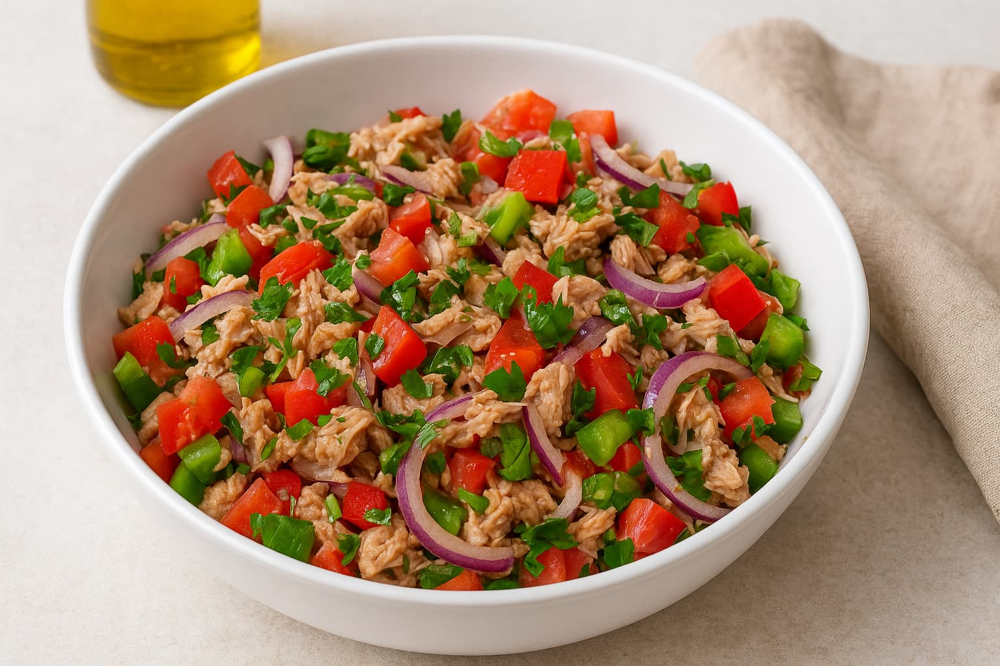

Thunfischsalat

15 Min.

Leicht

14.09.2025
| 2 Dosen (370 g) Thunfisch im eingenen Saft |
| 1 rote Zwiebel |
| 2 aromatische Tomaten |
| 1 Paprikaschote, grün |
| 1 Paprikaschote, rot |
| 15 g glatte Petersilie |
| 4 El Olivenöl |
| 2 TL weißer Balsamico-Essig |
| 0.5 TL frischer Zitronensaft |
| 0.5 TL Zitronenschalen Abrieb |
| 1 TL Meersalz |
| Msp schwarzer Pfeffer |
Zubereitung
Vorbereitungszeit 10 Min.
Zubereitungszeit 5 Min.
Gesamtzeit ca 15 Min.
- Schnippeln: Paprika und Tomaten schneidest in kleine Würfel am besten auf einem stabilen Brett und mit einem kurzen scharfen Gemüsemesser. Dieses verwendest Du auch, um die glatte Petersilie fein zu schneiden.
- Thunfisch vorbereiten: Den Doseninhalt drückst Du entweder mit dem Deckel aus oder gibst den Thunfisch in ein Sieb und lässt ihn darin gut abtropfen. Mit einer Gabel zerdrückst Du den Thunfisch in mundgerechte Stücke.
- Thunfischsalat Dressing: Olivenöl, weißen Balsamico, frischen Zitronensaft und den Zitronenabrieb mit den Gewürzen in einer Schüssel vermischen.
- Salat Zutaten vermengen: Alle Zutaten mischst Du in einer großen Schüssel. Den bunten Salat mit Thunfisch kannst Du sofort servieren oder im Kühlschrank noch etwas durchziehen lassen.
Rezept erstellt von

Alex Epp